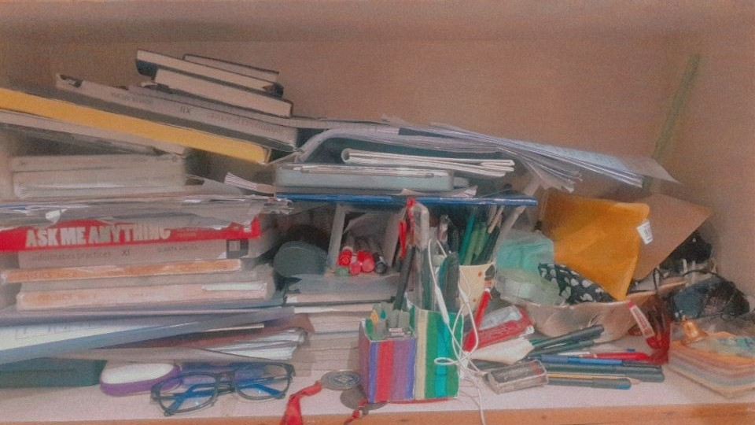
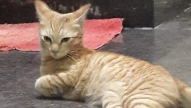
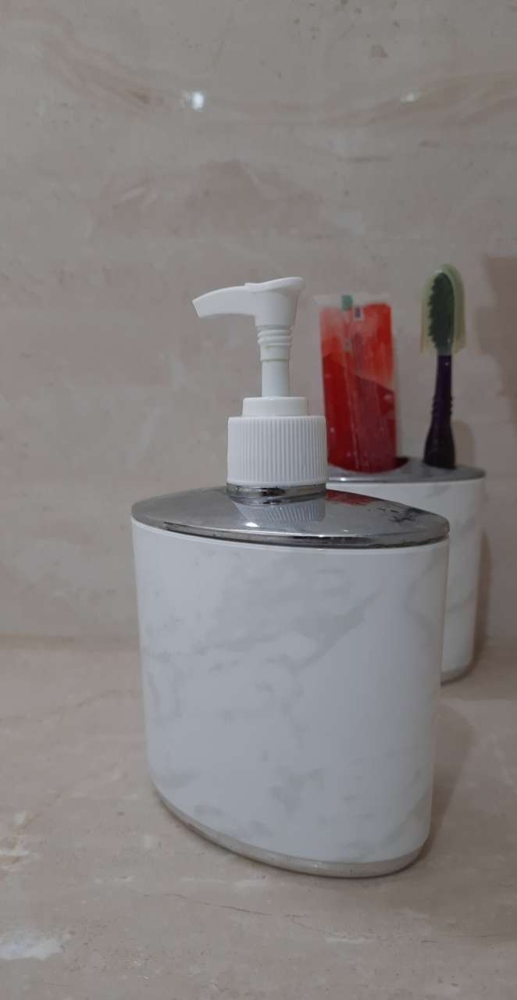
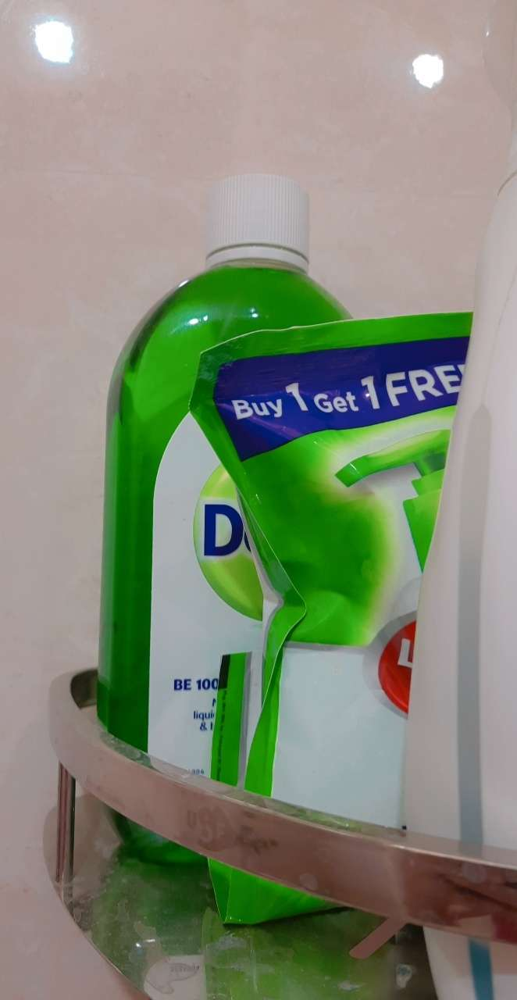
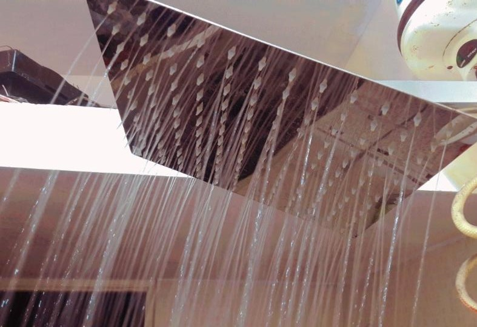
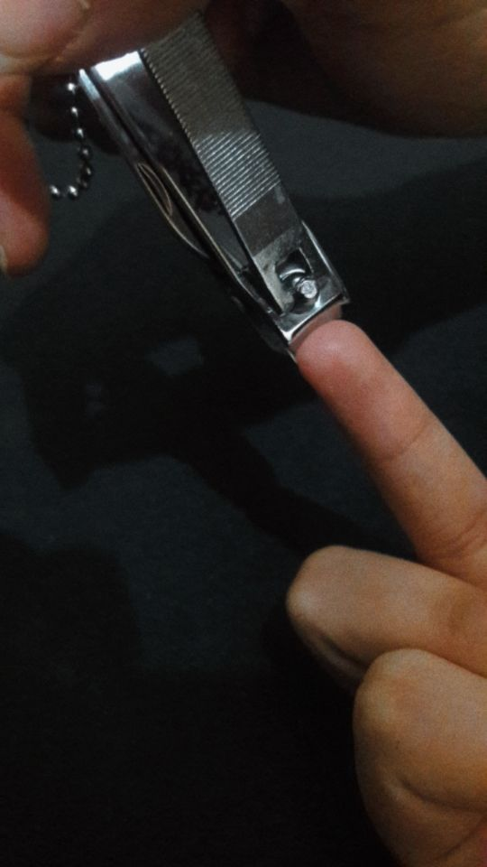

Since human beings in general wont do soemthing necessary when they dont see the importance of it, I'm going to now tell you why you need to maintain individual cleanliness.
before you skip this, why? reading this will help you increase the drive to stay clean, even if you already know the reasons, revise so that it stays with you.
EFFECTS OF UNTIDINESS ON PHYSICAL HEALTH & MENTAL HEALTH
- Having an untidy or dirty room or living space, can trigger allegries.
- Diseases like typhoid, hepaptitis and dengue can be mostly avoided by regularly sanitizing and maintaining an attentively lean environment.
- Eating healthy and clean is also a part of individual cleanliness, we can drastically reduce the spread of diseases like Jaundice, Cholera, Ascariasis, Leptospirosis, Ringworm and many others by just eating and drinking non- contaminated water and living in hygienic conditions.
- It also has various effects on inducing motivation, according to just household observation we can see that children or adults working in a messy enivronment tend to have lesser drive or motivation to work ad working less or not having the mood will adversely affect their mental health again as they feel lazy and incompendent due to the environment.
- the relaxed, nice feeling, the motivation and the confidence all depends on the environment the person spends time and grows up in. I think we must all know that the envirnoment hugely affects the productivity and happiness of a person and certain designs and colors have have experimentally proved to calm or improve the mood of the person, the point here is that an effective lifestye requires a tidy and neat environment  

how to maintain basic cleanliness & personal hygiene
-
Alright, now that we've seen why we need to keep it up, let's see how we can do so.
- Washing hands before and after eating and after going to the toilet.This is something which is one of the most basic but important even if it may seem insignificant.

Incase you are so lazy, that even washing hands before and after a meal is hard for you, here's a fun way & if you feel bored sing and dance as you wash. - 2.Washing clothes regularly and wearing only clean ones.

Again, if you dont know how to do your laundry, its alright, I've got you.
This one is for handwashing:
This one is for machine wash:
If you dont feel the motivation to do this, let me just tell you, how accomplised you are going to feel at the end of the day for pouring this much effort into the day and living it rightly and fullfillingy.
And yes ofcourse, how beneficial its going to be to lift your mood, how much better its going to be for you skin and so on and so on. - brushing teeth your teeth twice a day.
for this, turn on your favorite song, and vibe whilst you brush or do it peacefully.
And here's a video ofcourse
- taking regular showers or baths.

and yes I have attached a shower and bath tutorial for you as well with the steps and no, not the process.
This is a shower tutorial:
This is for a bucket bath:
This is a bath tutorial:
Showers and baths are stress relieving and they clean and exfoliate our skin. - wash your bath towels regularly,the steps to washing a towel are the same as the ones for doing laundry
- clean and cut your nails regularly

Since we as human beings use our hands a lot, they may harbour many dangerous and unknown germs which could cause mild to very serious harm to our bodies.
And..Cutting nails are fun! its like an art right? snipping and shaping. Here's a tutorial for you incase you weren't familiar with how it goes. It's alright, we're all here to learn aren't we? - always carry a tissue or hankerchief to sneeze on, and if not available cover your mouth with an elbow.
This is a video on how to sneeze the right way in public or private without putting others at a risk.
Hey! now that I've told you how to do it, Let's see how much of its you've done today.
If even one of these boxes are unchecked then, It's okay its your first day after all.
Come back to me in 10 days it better be all checked that day.
If you've come here after 10 days and all the boxes are checked then CONGRATULATIONS!! I'm really proud of you & please keep this up.
But if its unchecked after 10 days, then I hope you've quite some serious circumstances to not be able to perform such basic tasks, I'm dissapointed.
Please come back after another 10 days.